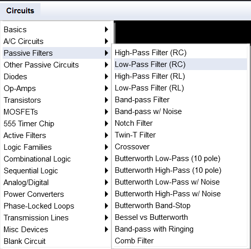
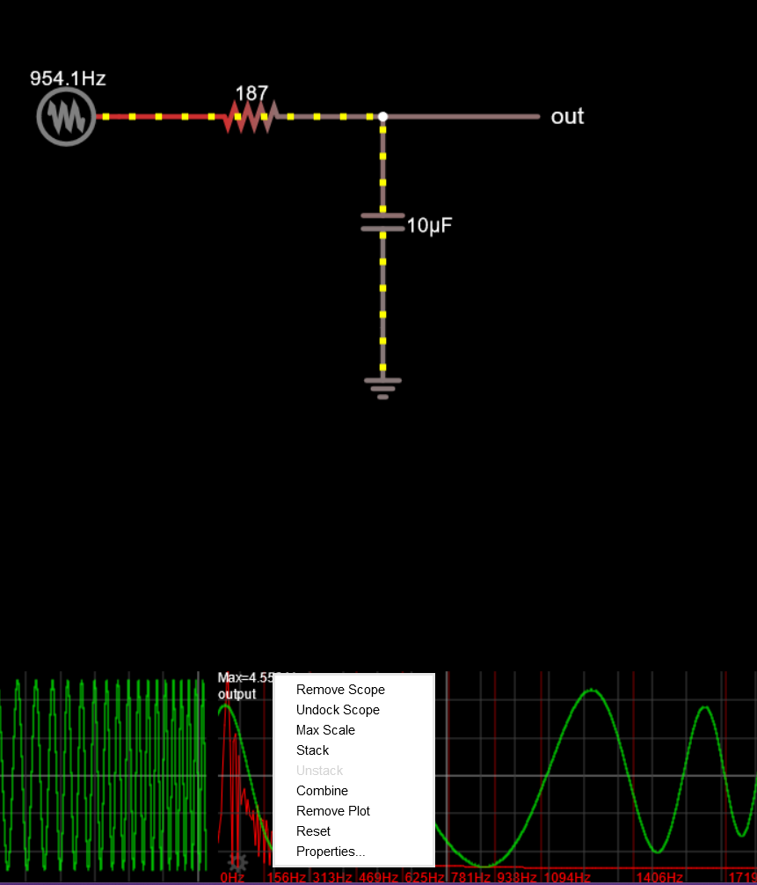

（不知道为什么有高温假放，第一次感觉这个世界有一分美好。じあ,就随便写点吧）
读本文可能需要一点信号与系统的基础和编程基础。
滤波在计算机中如何实现？
省流版：
1
2
3
4
5
6
7
8
9
10
11
| double cutoff_Freq=432;
double sampleRate=44100.0;
double a=cutoff_Freq/sampleRate;
for(int i=1;i<samples.length();i++){
samples[i]=a*samples[i]+(1.0-a)*samples[i-1];
}
|
公式为：
x[i]=ax[i]+(1−a)x[i−1]
这个公式怎么来的，a又是什么，下文会提到。
为什么不直接在频域做处理？
首先：傅里叶变换 的运算量极大，且涉及大量三角函数和浮点运算，经过ft（傅里叶变换）和ift（逆傅里叶变换）过程，耗时非常高；而且频谱是根据时间不断变化的，所以要用stft等进行分帧，再进行变换，而每次分帧加窗都会有误差产生，误差累积起来就会对音质有影响。
如何从时域去进行操作？
模拟电路？
我们从RC电路开始说起：
打开电路仿真网站： http://lushprojects.com/circuitjs/circuitjs.html 选择RC电路：

然后右键下方的波形图，选择properties（属性）：

勾上show Spectrum，当然如果有其他想观测的信息也可以勾上；
现在可以对比一下，去掉电阻后的输出有什么不同（重点关注85.2Hz后的频谱，因为计算得出的截止频率为85.2Hz,这里请先关注现象，截止频率计算什么的将在后面提到）
这个电路就是RC滤波电路，电感以磁能存储电能，在电流变化时产生反向电压，阻止电流突变；电容存储电荷，当电压变化时电荷会流出或流入，减缓电压变化。这两种对交流电的阻碍都叫做阻抗。
电容的阻抗的公式为 ZC=jwc1
电压的阻抗的公式为 ZR=R
根据KVL基尔霍夫电压定律：$V_{out} = V_c = V_{in} - V_R $
因为输入的是交流电，将其用微分方程表示 $$RC \frac{dv_c(t)}{dt} = v_{in}(t) - v_c(t)$$ (这里的公式大概能懂吧，有点像电路中电流的等式，可以结合高中学过的公式： C=UQ , I=tQ=RU ，也可结合信号与系统——奥本海姆书P153来看)
令输入电压Vin=ejwt，输出电压一定为：$V_{out} =H(jw)e^{jwt} $。 其中 H(jw) 是 频率响应 ，即 H(jw)=vinvout
(为什么用到 ejwt ？因为对 ejwt 进行求导或积分，求导后的表达式仍有$ e^{jwt} $，利用复指数的性质能简化运算和方便研究系统特性)
得： RCdtdH(jw)ejwt=ejwt−H(jw)ejwt
可直接得出： H(jw)ejwt=1+RCjw1ejwt
其中上文提到的截止频率wc=RC1
对频率响应取模： ∣H(jw)∣=∣1+RCjw1∣=1+(wcw)21 ((实部平方+虚部平方)并开根号)
所以当信号的频率w>wc，则信号衰减；
当将$ H(jw) $推广到拉普拉斯域，即 s=σ+jw,得: $$H(s) = \frac{1}{1+ \frac{s}{w_c}}$$
此时 H(s) 就叫做 传递函数 .
数字滤波
计算机处理的数据是离散的，音频也是离散化的。所以我们要利用z变换将传递函数离散化，利用一阶前向差分法： $$s=\frac{z-1}{T}$$
另外先推导一下这个一阶前向差分法的公式吧。
首先根据拉普拉斯变换的时域微分性质，有 dtdx(t)↔sX(s)（网上有很多写的是dtdx(t)↔sX(s)−f(0)，不过计算机中的音频数据一般是因果信号，所以f(0) = 0）,我们利用差分来近似微分：
dtdx(t)=y[n]≈Tsx[n+1]−x[n]
其中Ts是采样时间，即两个采样点之间时间间隔（对于连续系统，采样时间间隔为0）；故在T足够小时，将上式由时域变换到z域，并且按照 Z变换的时移性质 ：x[n−n0]↔z−n0X(z)，其中n0=-1,即x[i+1]↔z1X(z),得：
Y[z]=TszX[z]−X[z]
即$$Y[z] = \frac{(z-1)X[z]}{T_s}$$
传递函数就是：
H(z)=Ts(z−1)
为了近似微分，用s替换H(z):
s=Ts(z−1)
即可得出公式。
如果还不明白可以看下面的推导：根据公式将s域离散化：z=esTs（这里类似于时域采样，只是是在复平面按采样时间间隔Ts进行采样），当sTs很小时，根据泰勒展开式（或者等价无穷小）：esTs≈1+sTs,得z≈1+sTs,整理上式，得
s=Ts(z−1)
说了这么多，回到正题，将上式代入到传递函数：H(s)=1+wcs1，得
H(z)=X[z]Y[z]=1+Twcz−11
为了照顾数学和我一样不太好的同学，我多写两步，将上式整理：
Y[z]+TwcY[z]z−Y[z]=X[z]
根据上文提到过的 Z变换的时移性质，并从z域变换到时域：
y[n]+Twcy[n+1]−y[n]=x[n]
令Twc=a，此时a就是滤波系数，得
ay[n]+y[n+1]−y[n]=ax[n]
即
y[n+1]=ax[n]+(1−a)y[n]
公式基本推导完成。（和刚开始的滤波公式差不多对吧（不过说起来，刚开始提到的滤波公式应该采用的是后向差分进行离散化，读者可以自行证明一下，方法差不多的），另外实践中离散化一般不采用这种方法，还有一些方法如双线性变换法等）
下次将会用C++与Juce实现这个滤波器（官方示例好像也有，可以去翻翻Juce的示例）